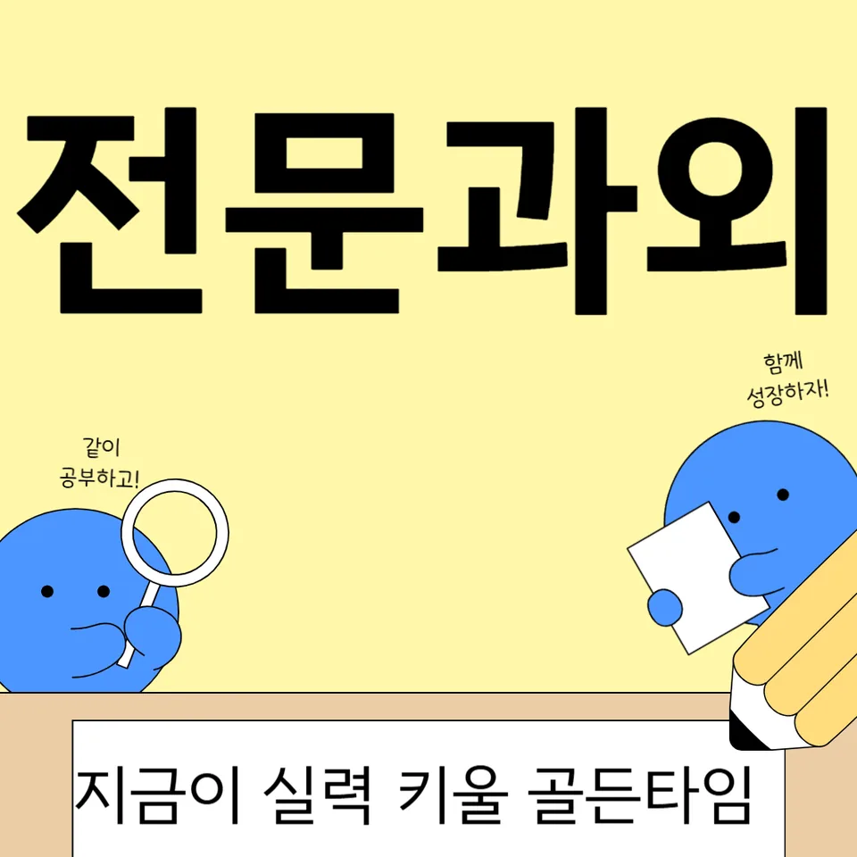

PageType : DONG
URL : /경기도과외/고양시과외/덕양구과외/지축동과외/
지역 학습환경과 학생들의 변화
지축동과외를 시작한 학생들은 처음엔 “어떻게 공부해야 하는지”보다 “오늘 할 일을 끝내는 방식”부터 잡히는 경우가 많습니다. 수업이 진행되면 학습 시간이 길어졌다기보다, 책상에 앉는 순간부터 과제의 범위가 또렷해져서 집중의 질이 달라집니다. 같은 시간을 써도 필기와 문제 풀이의 순서가 정리되면서, 학교 수업을 집에서 다시 확인하는 흐름이 자연스럽게 생깁니다.
지역 학습환경은 조용함과 이동 동선이 함께 작용합니다. 학교에서 돌아온 뒤 멍하게 시간을 보내던 학생도 지축동과외에서 “오늘의 확인-내일의 예고” 루틴을 만들면, 수업 후 바로 복습을 붙잡습니다. 그 결과 성적표를 확인했을 때 가장 먼저 바뀌는 건 큰 점수의 도약이 아니라, 과목별 감점이 줄어드는 양상입니다. 특히 문제를 풀고 나서 왜 틀렸는지 기록하는 습관이 생기며, 시험 전에도 불안이 덜합니다.
학부모가 많이 고민하는 부분
학부모들은 대개 “우리 아이가 노력은 하는데 성적이 안 오른다”는 말로 상담을 시작합니다. 지축동과외에서는 노력의 모양을 먼저 점검합니다. 예를 들어 교재를 많이 풀었다고 생각하지만, 실제로는 같은 유형을 반복해서 놓치거나 계산 실수가 이어지는 패턴일 수 있습니다. 그럴 때는 양을 늘리기보다 오답의 성격을 분류해 다음 학습의 방향을 바꿉니다.
또 다른 고민은 공부 시간이 들쭉날쭉하다는 점입니다. 평일엔 괜찮다가 주말만 되면 계획이 무너지는 학생도 있습니다. 학부모가 보기엔 “의지 문제”처럼 보이지만, 실제로는 과제량 조절 실패나 시작 진입장벽이 원인인 경우가 많습니다. 지축동과외는 짧은 시작 과제를 먼저 두고, 점차 목표를 키우는 방식으로 습관을 고정합니다.
학년이 올라갈수록 달라지는 공부
중학교와 고등학교로 갈수록 공부는 ‘내용 이해’에서 ‘점수로 연결되는 처리 과정’으로 바뀝니다. 지축동과외를 받는 학생들도 학년이 올라가면 같은 전략이 통하지 않는 걸 경험합니다. 처음엔 개념을 정리하는 데 시간을 쓰다가, 어느 순간부터는 유형별 풀이 속도와 정확도를 동시에 맞춰야 합니다. 그래서 학습 태도도 달라져야 합니다.
학년 변화의 핵심은 복습의 기준이 바뀐다는 것입니다. 시험이 가까워지면 모든 것을 다시 보는 방식이 오히려 부담이 되기도 합니다. 지축동과외에서는 “자주 틀리는 단서-자주 나오는 연결”을 기준으로 복습 우선순위를 세웁니다. 이 과정이 쌓이면 학생이 시험 전날에도 할 일을 명확히 알게 되어, 불필요한 시행착오가 줄어듭니다.
학교생활과 내신 준비
내신은 공부량이 아니라 학교생활의 결과로 나타나는 경우가 많습니다. 수업에서 놓친 부분을 집에서 따라잡는 학생, 숙제는 했는데 정작 평가 포인트를 놓친 학생 등 유형이 분명합니다. 지축동과외에서는 학생의 수업 참여 태도와 과제 수행 방식부터 확인하고, 학교에서 강조하는 단서를 학습 계획에 반영합니다. 그래서 내신 준비가 막연히 “열심히 하기”가 아니라 “평가 관점 맞추기”가 됩니다.
또한 같은 시험 범위라도 난이도 체감은 다릅니다. 어떤 학생은 개념은 아는데 서술형에서 점수가 깎이고, 다른 학생은 기본 문제는 풀지만 시간에 쫓깁니다. 지축동과외는 서술형 문장 구성, 도식화 연습, 계산 습관처럼 ‘감점이 나는 부분’에 초점을 맞춥니다. 그러면 내신에서 변수가 줄고, 학기 중반부터 성적의 바닥이 올라가는 흐름이 만들어집니다.
자기주도학습이 중요한 이유
자기주도학습은 의욕의 문제가 아니라 판단의 능력입니다. 지축동과외에서 학생이 배우는 것은 “무엇을 할지”를 스스로 고르는 방식입니다. 처음엔 선생님의 체크리스트를 따라가지만, 점차 스스로 오답을 확인하고 다음날 목표를 정합니다. 이때 중요한 건 시간을 늘리는 게 아니라, 시작-진행-마무리의 구조를 내 것으로 만드는 과정입니다.
학생이 자기주도학습을 경험하면 시험기간에도 흔들림이 줄어듭니다. 계획이 틀어졌을 때도 이유를 분석하고 조정하는 능력이 생기기 때문입니다. 지축동과외는 학습 기록을 남기고, 기록을 근거로 피드백을 주는 방식이라 “오늘 했으니 됐다”에서 “오늘 왜 남겼는지”로 사고가 바뀝니다. 결국 자기주도학습은 성적을 유지하게 해주는 안전장치가 됩니다.
공부 습관이 성적에 미치는 영향
성적이 흔들리는 학생들의 공통점은 루틴이 불안정하다는 점입니다. 어떤 날은 개념 정리를 길게 하고, 다른 날은 문제만 풀어버리며, 기록은 남기지 않습니다. 지축동과외에서는 매일의 형태가 같아지도록 ‘최소 단위’를 설정합니다. 예를 들어 15분 복습-25분 문제-5분 오답 정리처럼, 짧아도 고정된 흐름이 생기면 점수가 따라오는 편입니다.
오답 습관도 성적에 직접 영향을 줍니다. 단순히 틀린 문제를 다시 풀면 끝나는 게 아니라, 왜 틀렸는지와 어떤 조건에서 같은 실수가 반복되는지 파악해야 합니다. 학생이 오답을 언어로 설명할 수 있게 되면 시험장에서 실수가 줄고, 문제를 보는 시야가 넓어집니다. 지축동과외는 그 설명 능력을 키워서, 공부가 ‘축적’으로 바뀌게 돕습니다.
체크해야 할 학습 포인트
아래 포인트를 점검하면 지축동과외를 통해 학생의 변화를 더 빠르게 확인할 수 있습니다.
- 수업 후 24시간 안에 복습을 했는지, 단순 읽기인지 실제 문제로 확인했는지
- 오답 노트에 “정답”만 적는지, “실수 조건”과 “다음 행동”까지 적는지
- 시간관리에서 가장 자주 무너지는 구간(시작/휴식/마무리)이 어디인지
- 시험 대비가 범위 암기 중심인지, 유형별 풀이 전략을 함께 적용하는지
자주 묻는 질문
지축동과외는 어떤 학생에게 특히 도움이 되나요?
수업은 듣는데 집에서 정리 흐름이 없거나, 내신에서 실수 감점이 반복되는 학생에게 효과가 큽니다. 지축동과외는 공부습관과 평가 포인트를 연결해 학생이 다음 단계를 스스로 고르게 돕습니다.
시험기간에 계획이 자주 틀어지는데 어떻게 하나요?
계획을 “더 세게” 잡기보다 무너지는 이유를 먼저 찾아 조정합니다. 지축동과외에서는 남은 시간 대비 우선순위를 재설계하고, 매일 확인할 체크 항목을 줄여 집중이 회복되게 합니다.
성적이 오르기까지 보통 얼마나 시간이 걸리나요?
초기에는 오답 패턴과 학습 루틴이 정리되면서 체감이 빠르게 나타나는 편입니다. 이후 내신 성적은 학교 수업-과제-시험이 연결되는 시점부터 확실히 변화가 보입니다.
과목 선택이나 학습 비중은 어떻게 조정하나요?
학생의 취약 단원과 평가 방식(서술형, 계산, 독해)을 기준으로 비중을 조정합니다. 지축동과외는 “어떤 과목을 더 하겠다”보다 “어떤 방식으로 점수를 만들겠다”를 먼저 정합니다.
학부모는 수업에 어떤 방식으로 참여하면 좋나요?
과도한 점검보다 생활 루틴을 안정시키는 쪽이 효과적입니다. 지축동과외에서는 학습 기록을 공유해, 학부모가 방향을 확인하고 학생이 스스로 수정하도록 돕는 형태를 권합니다.
